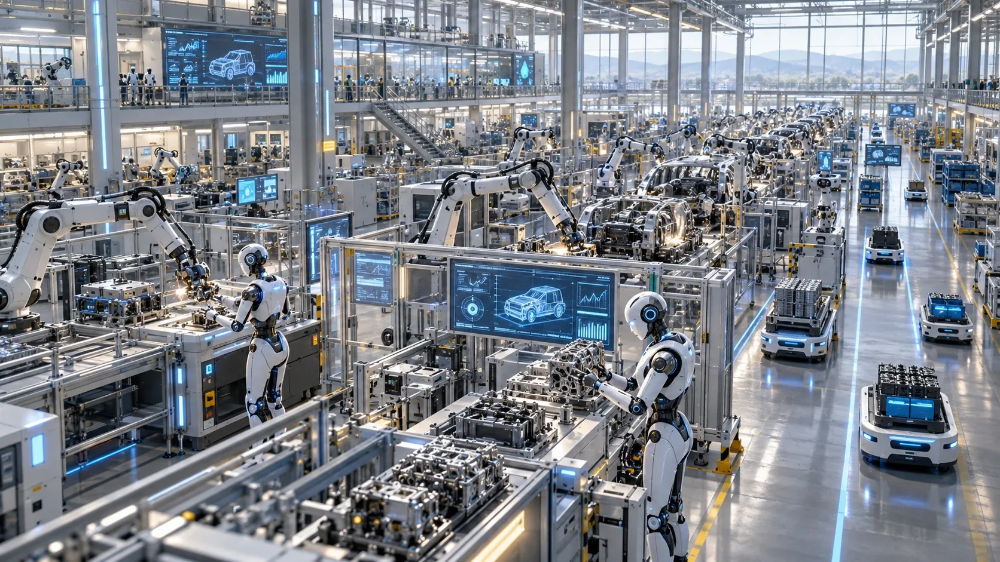
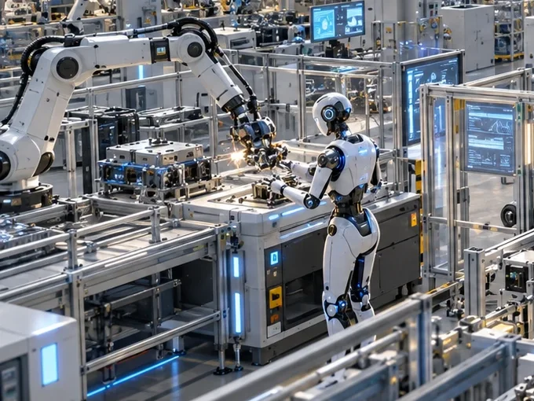
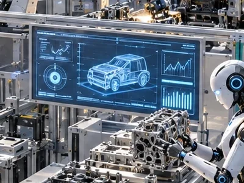
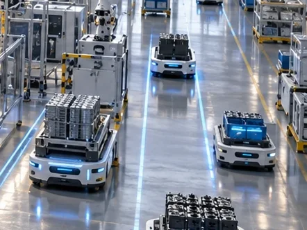
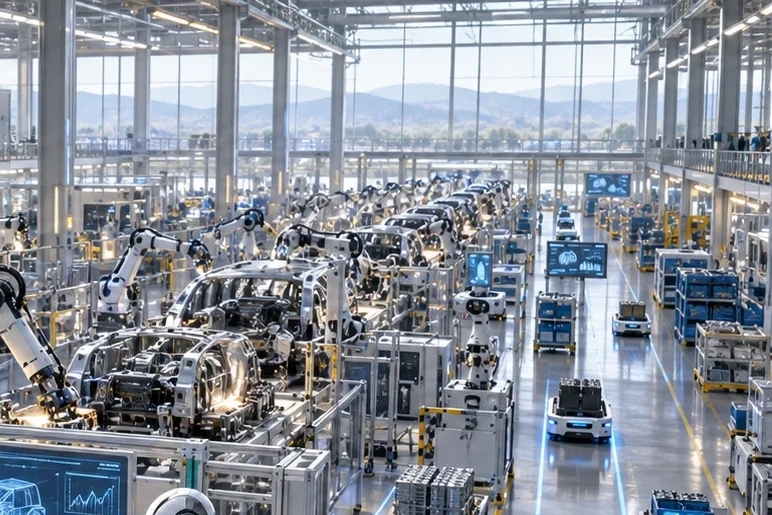

產發署「提升產業競爭力研發轉型支持」個案補助
上限 500 萬
可同時規劃「設備 × 系統 × AI」，支援跨企業聯盟，可分模組、分階段執行。適合受關稅或市場衝擊、有設備升級與研發轉型需求的製造業。

INDUSTRY 4.0 INTEGRATOR
以工程落地為核心，從自動化設備、AI 視覺檢測到工業 4.0 戰情室，協助企業完成製程升級與智慧化導入。
也提供政府補助申請輔導，從申請到技術落地全程陪跑
不只是顧問建議，我們實際參與設備整合、系統建置與技術導入，確保每個方案都能真實運作。

機械手臂與自動化設備取代重複性人工操作，提升作業穩定性，降低人力依賴。

感測器即時記錄溫度、壓力、速度與品質參數，異常立即警示，降低重工與不良品率。

串接 MES/ERP/設備/Excel，集中一個入口。良率與產能自動彙整，一鍵追溯批次、工站與參數。
以整合架構為核心，搭配可行的政策資源，優化企業升級路徑與資本運用效率。
不需要懂程式，只要理解這四個步驟，就能知道我們如何幫工廠升級。
機械手臂自動執行加工任務，接受遠端指令控制，取代重複性人工操作。
即時偵測溫度、壓力、速度，自動量測品質參數，異常立即通知。
串接 MES/ERP/設備/Excel，良率與產能指標自動彙整。
用自然語言直接問系統，AI 找出效率瓶頸，提供具體製程改善方案。
初次諮詢免費。也可以免費試算您能申請的補助金額。
我們從補助申請到技術落地全程陪跑，也可以先從補助規劃開始討論。
不需要。採模組化設計，可隨企業成長分階段逐步升級。
與工研院、資策會、金屬中心、國立陽明交通大學、國立虎尾科技大學等機構合作，串聯產學研資源。
